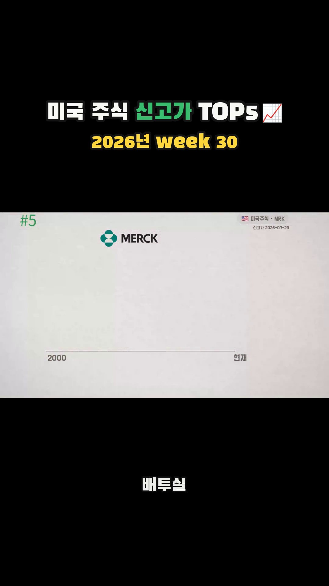
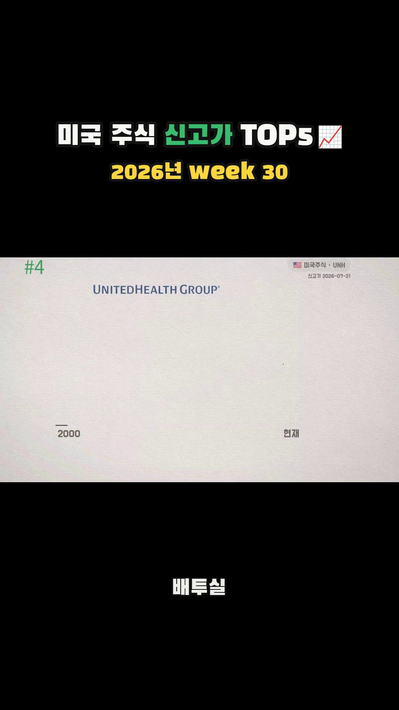
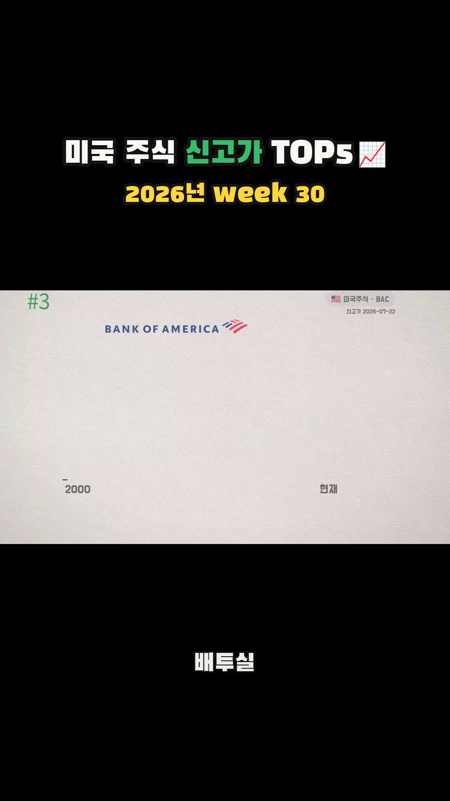
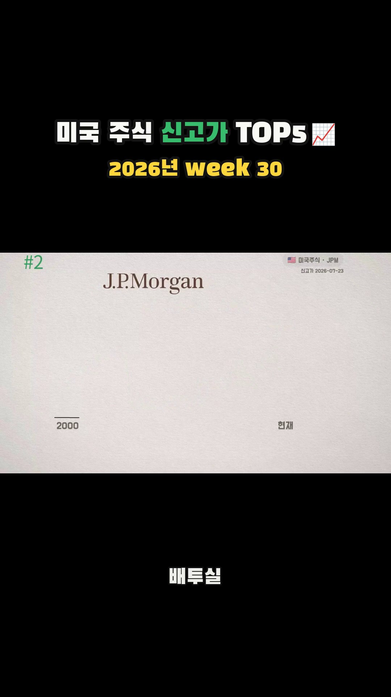
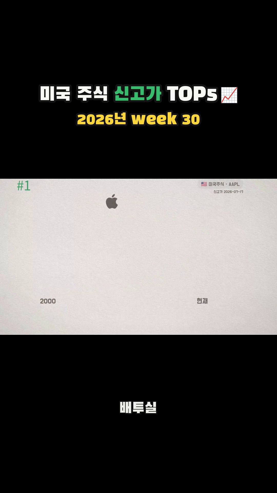
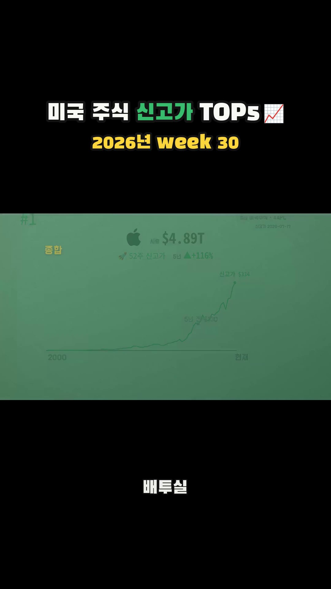
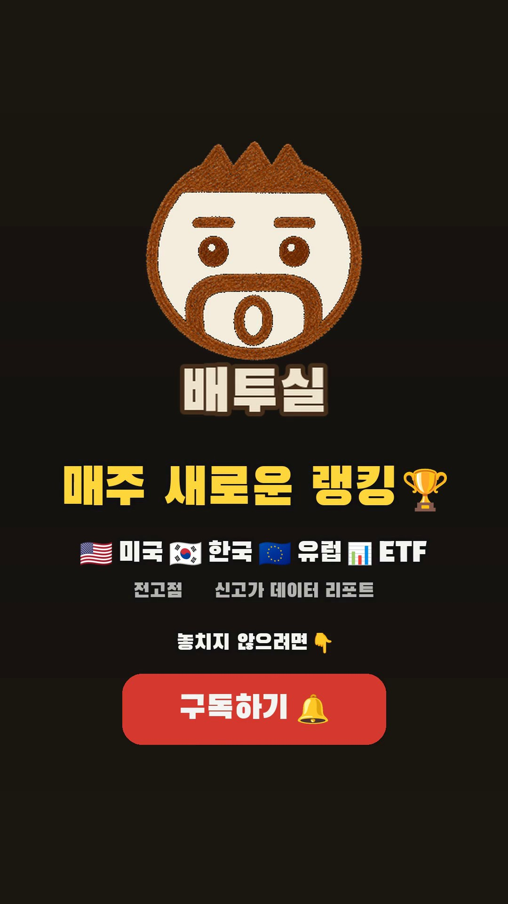

01캡쳐 00:00상단에 “미국 주식 신고가 TOP5 / 2026년 week 30”을 고정하고 #5 MERCK를 즉시 노출. 2000년부터 현재까지의 차트가 왼쪽에서 오른쪽으로 그려지기 시작한다.
왜 통하나 첫 프레임에서 TOP5·미국주식·주차를 모두 알려 영상의 보상을 즉시 이해시킨다.
배투실 개선 첫 1초에 “이번 주 새 신고가 5개”처럼 발견의 크기나 반전 문구를 더하면 스와이프 방어력이 커진다.
5개 종목의 신고가 도달 과정을 같은 모션으로 연속 제시하는 랭킹·데이터 시각화 쇼츠 · 고정 헤더 + 차트 성장 + 숫자 카운트다운 + CTA

01캡쳐 00:00상단에 “미국 주식 신고가 TOP5 / 2026년 week 30”을 고정하고 #5 MERCK를 즉시 노출. 2000년부터 현재까지의 차트가 왼쪽에서 오른쪽으로 그려지기 시작한다.
왜 통하나 첫 프레임에서 TOP5·미국주식·주차를 모두 알려 영상의 보상을 즉시 이해시킨다.
배투실 개선 첫 1초에 “이번 주 새 신고가 5개”처럼 발견의 크기나 반전 문구를 더하면 스와이프 방어력이 커진다.

02캡쳐 00:04순위를 #4로 낮추며 종목명과 시가총액을 교체. 같은 좌표계에서 장기 차트를 다시 그려 신고가 지점과 상승률을 강조한다.
왜 통하나 레이아웃은 유지하고 데이터만 바꿔 시청자가 학습 없이 비교에 집중하게 한다.
배투실 적용 순위·로고·차트·핵심 수치의 위치를 모든 랭킹 쇼츠에서 고정해 시리즈 문법으로 만들 수 있다.

03캡쳐 00:09#3 Bank of America로 전환. 큰 하락과 회복이 함께 보이는 차트를 애니메이션으로 완성한 뒤 현재 신고가를 표시한다.
왜 통하나 단순 상승선보다 낙폭과 회복이 보여 “어떻게 신고가에 왔나”라는 작은 서사가 생긴다.
배투실 개선 “금융위기 낙폭을 회복”처럼 차트에서 읽어야 하는 의미를 한 줄 자막으로 번역하면 체류 이유가 강해진다.

04캡쳐 00:15#2 JPMorgan으로 카운트다운. 종목 데이터가 먼저 나타나고 차트가 현재 지점까지 진행되며 신고가 도달을 시각적으로 확인시킨다.
왜 통하나 5→2까지 같은 리듬을 반복하면서도 1위가 남아 있어 자연스럽게 다음 장면을 기다리게 한다.
배투실 적용 각 종목에 1개씩 “배당률·배당성장률”을 붙이면 일반 시황 채널과 다른 배투실 고유 정보가 된다.

05캡쳐 00:20마지막 #1 Apple을 공개. 익숙한 로고와 큰 시가총액을 중심으로 차트를 완성하며 랭킹의 최종 보상을 제공한다.
왜 통하나 가장 대중적인 종목을 마지막에 배치해 낯선 종목에서 시작한 랭킹의 이해 장벽을 낮춘다.
배투실 개선 1위 공개 직전 0.3초 멈춤이나 블러를 넣으면 예상과 확인 사이의 긴장을 더 만들 수 있다.

06캡쳐 00:23.9애플 차트 위로 브랜드 컬러가 덮이며 데이터 화면을 닫고, 배투실 캐릭터와 CTA 카드로 빠르게 전환한다.
왜 통하나 반복되던 흰 차트에서 어두운 브랜드 카드로 대비가 크게 바뀌어 CTA를 새 장면으로 인식시킨다.
배투실 개선 전환 전에 “다음 주에도 업데이트”를 넣어 구독 이유를 먼저 만들고 버튼을 보여주는 편이 설득력이 높다.

07캡쳐 00:25배투실 로고, “미주 새로운 랭킹”, 미국·한국·배당·ETF 카테고리와 구독 버튼을 한 화면에 제시해 종료한다.
왜 통하나 채널이 다루는 범위를 한눈에 정리해 첫 방문자에게 정체성을 설명한다.
배투실 개선 3.7초 엔드카드는 쇼츠에서 이탈 구간이 되기 쉽다. 1.5~2초로 압축하거나 1위 화면 위에 CTA를 겹치면 완주율 손실을 줄일 수 있다.